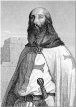
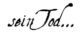
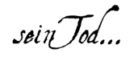

|
Von 1245 bis 1307
Da keine zuverlässigen archivarischen Quellen von Geburt des Jacques de Molay (auch Jacob oder Jacobus von Molay) vorliegen, lassen sich Geburtsort und -datum nicht mit Sicherheit bestimmen. Einziger Anhaltspunkt sind einige Aussagen im Verlauf des Prozesses, die in den Prozessprotokollen festgehalten und in den Archiven der europäischen Königshäuser der damaligen Zeit aufgefunden wurden. Sie lassen darauf schließen, dass Jacques de Molay um 1245 in Molay (Haute-Saône) in der Grafschaft Burgund geboren wurde, zur damaligen Zeit Teil des Deutschen Reichs.
Um 1265 wird er in Beaune in den Templerorden aufgenommen. Die Aufnahmefeierlichkeiten erfolgen unter der Leitung Humbert de Pairauds (auch Ymbert de Peraudo), Generalvisitator von Frankreich und England, und Amaury de la Roches (auch Amalric de Ruppe), Meister von Frankreich.
Gegen 1270 findet man Jacques de Molay im Orient wieder, wie das Heilige Land zu jener Zeit genannt wurde. Über sein Wirken im Heiligen Land ist nichts bekannt. Es steht nicht fest, ob er zu den Überlebenden von Akkon gehörte, denen gemeinsam mit Thibaud Gaudin – damals Großmeister des Ordens - die Flucht nach Zypern gelang. Allerdings nimmt er im Herbst 1291 an einem Ordenskonzil auf der Insel teil. Vor April 1292 noch wird er zum Großmeister des Ordens gewählt, nur kurze Zeit nach dem Tod Thibaud Gaudins. Unmittelbar nach seiner Wahl nimmt Jacques de Molay die dringlichsten Angelegenheiten in Angriff. Er beruft die restlichen Würdenträger zur "Regierung" ein und ergreift in großer Eile alle Maßnahmen zur Verteidigung der Insel Zypern und des Königreichs Kleinarmenien, d. h. der letzten Besitztümer der Franken im Osten.
Im Frühjahr 1293 unternimmt er eine längere Reise nach Europa, um verschiedene Probleme in den Ländereien des Ordens zu regeln. Vor allem aber will er bei den westlichen Herrschern und der Kirche um Unterstützung für die Verteidigung der letzten christlichen Bastionen im Heiligen Land werben. Im Verlauf dieser Reise baut er eine enge Beziehung zu mehreren Monarchen auf, darunter Eduard I. von England und Jakob II. von Aragon, sowie zu Papst Bonifatius VIII. Im Herbst 1296 kehrt er nach Zypern zurück, um die Schwierigkeiten des Ordens mit König Heinrich II. zu bereinigen.
1298 organisiert er einen Feldzug nach Kilikien, zweifellos nach dem Fall von Roche-Guillaume, der letzten Festung des Königreichs. Leider gelingt es den christlichen Streitkräften nicht, den Sieg Ghazans, des Khanats von Persien, über die Mameluken in der Schlacht von Homs im Dezember 1299 für sich zu nutzen.
Im Jahr 1300 treibt er die Befestigung der Insel Ruad vor der syrischen Hafenstadt Tortosa voran. Die Insel soll zu einem Vorposten für künftige Operationen mit den Mongolen ausgebaut werden. Es kommt jedoch niemals zu einer Allianz zwischen Christen und Mongolen gegen die Mameluken, da sich die Mongolen vorrangig den inneren Stammeskämpfen zuwenden. Im September 1302 fallen die Templer von Ruad im Kampf gegen ägyptische Mameluken. Danach gibt Jacques de Molay die Strategie einer Allianz mit den Mongolen auf, da sich diese als vollkommener Misserfolg erwiesen hat.
1305 befragt der neue Papst Clemens V. die Großmeister der Ritterorden nach ihren Ansichten zur Vorbereitung eines neuen Kreuzzugs sowie über das Vorhaben einer Vereinigung der Orden. Am 6. Juni 1306 werden sie von Clemens V. offiziell nach Poitiers einberufen, aufgrund einer Erkrankung des Papstes findet das Treffen mit Jacques de Molay jedoch erst im Mai 1307 statt. In der Frage, ob die Orden vereinigt werden sollen, hatte Jacques de Molay seine Meinung dem Papst bereits zuvor deutlich gemacht und weicht nicht von seinem Standpunkt ab: Er lehnt das Projekt kategorisch ab. Diese Entscheidung sollte schwerwiegende Folgen für die Zukunft des Templerordens haben. Zunächst brüskiert er dadurch den König Frankreichs, dessen Ambitionen er damit entgegenwirkt. Außerdem erschwert er die Verhandlungen zwischen Clemens V. und Philipp dem Schönen über die heikle Angelegenheit einer postumen Verurteilung Bonifatius VIII. Und nicht zuletzt behindert er durch seine Haltung auch die Versuche, einen neuen Kreuzzug auf die Beine zu stellen. Anlässlich dieser Reise in den Westen stellt Jacques de Molay allerdings zum ersten Mal fest, dass verleumderische Gerüchte über die Templer kursieren. Philipp der Schöne und seine Berater werden sich nicht die Gelegenheit entgehen lassen, diese Schwäche zu nutzen, und bereiten ohne Verzögerung einen Plan vor, um den unnachgiebigen Orden endgültig aus dem Weg zu räumen. Am 24. Juni hält sich Jacques de Molay in Paris auf. Er begegnet dort dem König, um mit ihm über die Anschuldigungen gegen den Templerorden zu sprechen. Durch das Gespräch mit Philipp dem Schönen beruhigt, kehrt er nach Poitiers zurück, wendet sich jedoch an den Papst mit der Bitte, unverzüglich eine Untersuchung einzuleiten, um den Orden von allen Verdächtigungen reinzuwaschen. Am 24. August informiert Clemens V. Jacques de Molay von der Einrichtung einer Untersuchungskommission. Aber Philipp der Schöne denkt nicht daran, sich die Sache aus der Hand nehmen zu lassen, und beschließt, das Verfahren zu beschleunigen. Am 14. September lässt er mit Unterstützung seines Beraters Guillaume de Nogaret unter dem Siegel der Verschwiegenheit seinen Landkomturen und Seneschallen einen Haftbefehl für alle Templer des Königreichs aushändigen und beauftragt die Beschlagnahmung ihrer Güter.
13. Oktober 1307: Verhaftung der Templer
[Anfang]
 Die Operation wird unter Leitung Guillaume de Nogarets durchgeführt, der in Begleitung seiner Schergen in eigener Person die 140 Templer in Paris verhaftet. Der aus dem Languedoc stammende Guillaume de Nogaret (auch Wilhelm von Nogaret) war als Legist für den König tätig. Noch am Vorabend seiner Verhaftung nimmt der Großmeister an der Beisetzung von Philipps verstorbener Schwägerin teil, Katharina von Courtenay, Titular-Kaisern von Byzanz, Gemahlin des Grafen von Valois. Dabei wird ihm sogar die große Ehre zuteil, deren Bahrtuch zu tragen.
Die Operation wird unter Leitung Guillaume de Nogarets durchgeführt, der in Begleitung seiner Schergen in eigener Person die 140 Templer in Paris verhaftet. Der aus dem Languedoc stammende Guillaume de Nogaret (auch Wilhelm von Nogaret) war als Legist für den König tätig. Noch am Vorabend seiner Verhaftung nimmt der Großmeister an der Beisetzung von Philipps verstorbener Schwägerin teil, Katharina von Courtenay, Titular-Kaisern von Byzanz, Gemahlin des Grafen von Valois. Dabei wird ihm sogar die große Ehre zuteil, deren Bahrtuch zu tragen.
Nach der Verhaftung der Ritter und des Großmeisters ist das weitere Schicksal dieses berühmten Templerführers eng mit demjenigen des gesamten Ordens verknüpft. Der Orden wurde im Jahr 1118 von französischen Kreuzrittern gegründet. Aufgabe des Ordens war der Schutz und die Verteidigung der Pilger im Heiligen Land. Die Noblesse und Tapferkeit der Ritter, die wertvolle Unterstützung und der Ruhm ihrer Gemeinschaft waren von Anfang an die Markenzeichen des Ordens und verhalfen ihm zu großem Prestige. Die Ordensstatuten wurden vom Konzil in Troyes (14. Januar 1128) bestätigt. Die folgenden zwei Jahrhunderte waren geprägt durch die vom Papst gewährten Privilegien, die Anerkennung durch Könige, Adel und Volk, durch eine Autorität und Finanzkraft, die tagtäglich durch neue ruhmreiche Taten und den immensen Reichtum der Templer weiter anwuchsen. All das ließ die Templergemeinschaft bald zum mächtigsten Orden in der gesamten christlichen Welt werden.
Das konnte nur Neid erwecken, auch den Neid von Königen. Denn angesichts der einflussreichen Stellung, die die Templer inzwischen einnahmen, war es kaum möglich, dass alle Ordensführer und Ritter eine weise Mäßigung an den Tag legten, die allein das Aufkommen von Neid und Hass hätte verhindern können. Dem Orden schadete auch die Tatsache, dass der König von Frankreich gleich mehrere Motive für ihre Auflösung hatte. Das wichigste Motiv war dabei sicherlich die Leere in den königlichen Schatzkammern. Damit war die Krone längst nicht mehr so wählerisch hinsichtlich der Mittel, mit denen sie sich einen Teil der Güter des Ordens aneignen und unbegrenzt darüber verfügen konnte.
Zeitgleich mit der Verhaftung des Großmeisters und aller Ritter, die sich mit ihm im Templerhaus in Paris befinden, nimmt der König deren Räumlichkeiten in Besitz und beschlagnahmt ihre Ländereien und Reichtümer. Mit der Verhaftung der anderen Ritter in den verschiedenen Teilen Frankreichs fällt ihm auch deren Besitz zu. Dann setzt sich die Maschinerie der Inquisition in Gang. Die Templer werden verhört und gefoltert, ihnen wird mit Auslieferung gedroht. Bald schon entreißen die Inquisitoren fast allerorts dem Großteil der Ritter Geständnisse. Sie gestehen die schändlichen Verbrechen, deren man sie beschuldigt, häretische Handlungen gegen die Natur, die Religion und die Gesellschaft: Neben Drohungen werden auch Versprechen als Druckmittel eingesetzt, um Geständnisse zu erzwingen, die dann die Härte der verwendeten Mittel nachträglich rechtfertigen.…/…
   |